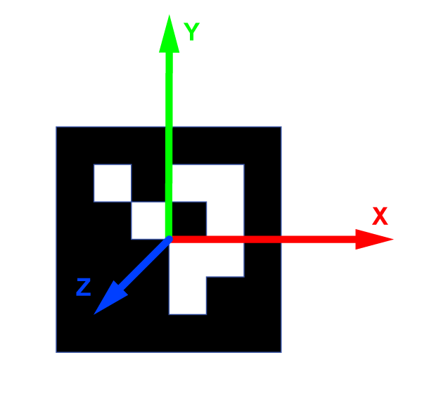
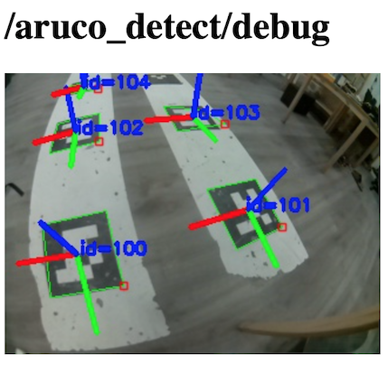

Распознавание ArUco-маркеров
Подсказка Для распознавания маркеров модуль камеры должен быть корректно подключен и сконфигурирован.
Модуль aruco_detect распознает ArUco-маркеры и публикует их позиции в ROS-топики и в TF.
Эта функция полезна для применения совместно с какой-либо системой позиционирования для дрона, такой как GPS, Optical Flow, PX4Flow, визуальная одометрия, ультразвуковое (Marvelmind) или UWB-позиционирование (Pozyx).
Также возможно применение совместно с навигацией по карте маркеров.
Настройка
Аргумент aruco в файле ~/technic_ws/src/technic/technic/launch/technic.launch должен быть в значении true:
<arg name="aruco" default="true"/>
Для включения распознавания маркеров аргумент aruco_detect в файле ~/technic_ws/src/technic/technic/launch/aruco.launch должен быть в значении true:
<arg name="aruco_detect" default="true"/>
Для правильной работы в этом же файле также должны быть выставлены аргументы:
<arg name="placement" default="floor"/> <!-- расположение маркеров, см. далее -->
<arg name="length" default="0.33"/> <!-- размер маркеров в метрах (не включая белую рамку) -->
Значение аргумента placement следует выставлять следующим образом:
- если все маркеры наклеены на полу (земле), выставить значение
floor; - если все маркеры наклеены на потолке, выставить значение
ceiling; - в противном случае удалить строку с параметром.
Если некоторые маркеры имеют размер, отличный значения length, их размер может быть переопределен с помощью параметра length_override ноды aruco_detect:
<param name="length_override/3" value="0.1"/> <!-- маркер c id 3 имеет размер 10 см -->
<param name="length_override/17" value="0.25"/> <!-- маркер c id 17 имеет размер 25 см -->
Система координат
С маркером связана следующая система координат:
- ось x указывает на правую сторону маркера;
- ось y указывает кверху маркера;
- ось z указывает от плоскости маркера.

Работа с распознанными маркерами
Наглядно распознанные маркеры можно видеть в топике aruco_detect/debug. Просмотреть его можно с помощью rqt_image_view или через web_video_server по ссылке http://10.42.0.1:8080/snapshot?topic=/aruco_pose/debug:

Распознанные маркеры и их позиции публикуются в топик aruco_detect/markers. Чтение топика из Bash:
rostopic echo /aruco_detect/markers
Навигация по маркерам
С использованием модуля simple_offboard можно осуществлять навигацию по маркерам используя соответствующие TF-фреймы.
Полет в точку над маркером 5 на высоту 1 метр:
navigate(frame_id='aruco_5', x=0, y=0, z=1)
Полет в точку на метр левее маркера 7 на высоте 2 метра:
navigate(frame_id='aruco_7', x=-1, y=0, z=2)
Если необходимый маркер не появится в поле зрения в течение полусекунды, дрон продолжит выполнять предыдущую команду.
Подобные значения frame_id можно использовать и в других сервисах, например get_telemetry. Получение расположения дрона относительно маркера 3:
telem = get_telemetry(frame_id='aruco_3')
Если необходимый маркер не появится в поле зрения в течение полусекунды, в полях telem.x, telem.y, telem.z, telem.yaw будет значение NaN.
Работа с результатом распознавания из Python
Чтение топика aruco_detect/markers из Python:
import rospy
from aruco_pose.msg import MarkerArray
rospy.init_node('my_node')
# ...
def markers_callback(msg):
print('Detected markers:'):
for marker in msg.markers:
print('Marker: %s' % marker)
# Подписываемся. При получении сообщения в топик aruco_detect/markers будет вызвана функция markers_callback.
rospy.Subscriber('aruco_detect/markers', MarkerArray, markers_callback)
# ...
rospy.spin()
Сообщения будут содержать ID маркера, его угловые точки на изображении и его позицию (относительно камеры).